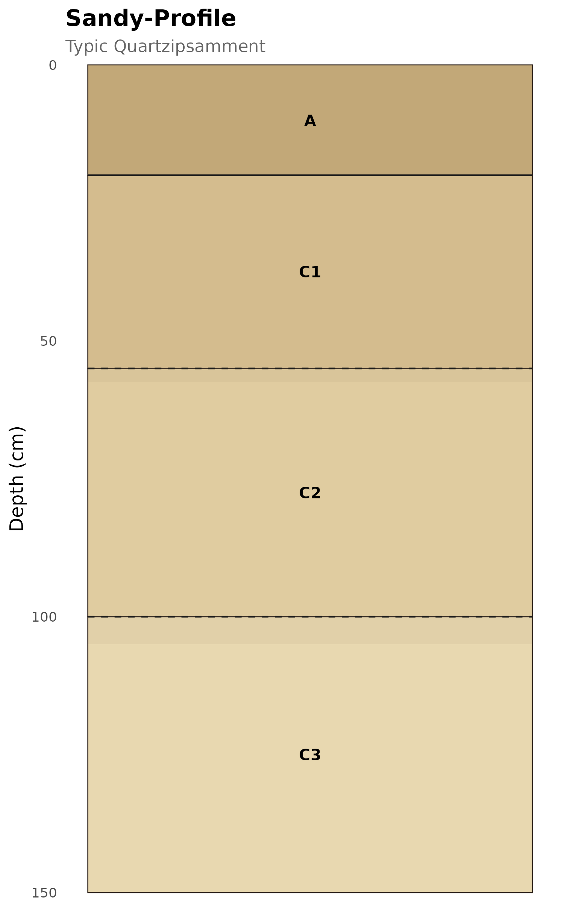
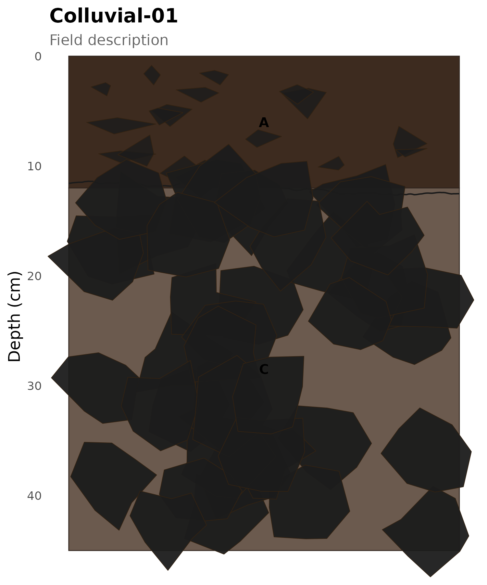
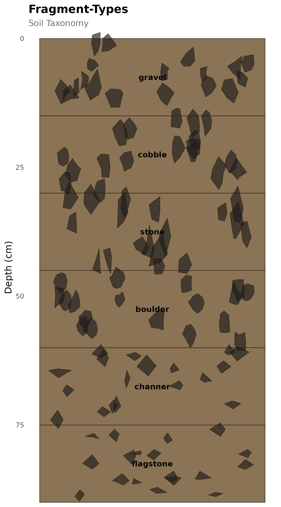
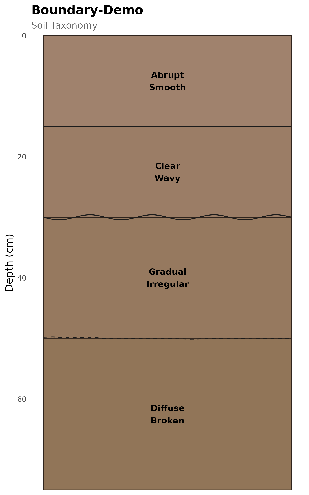
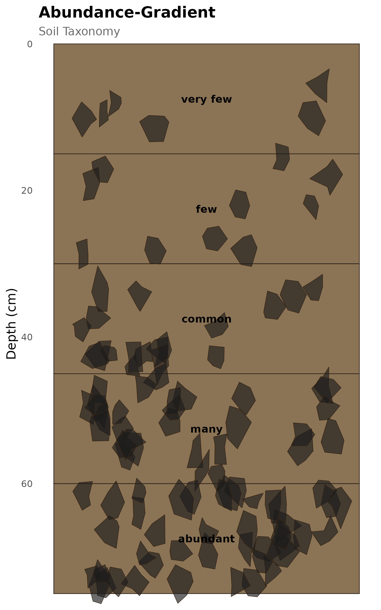
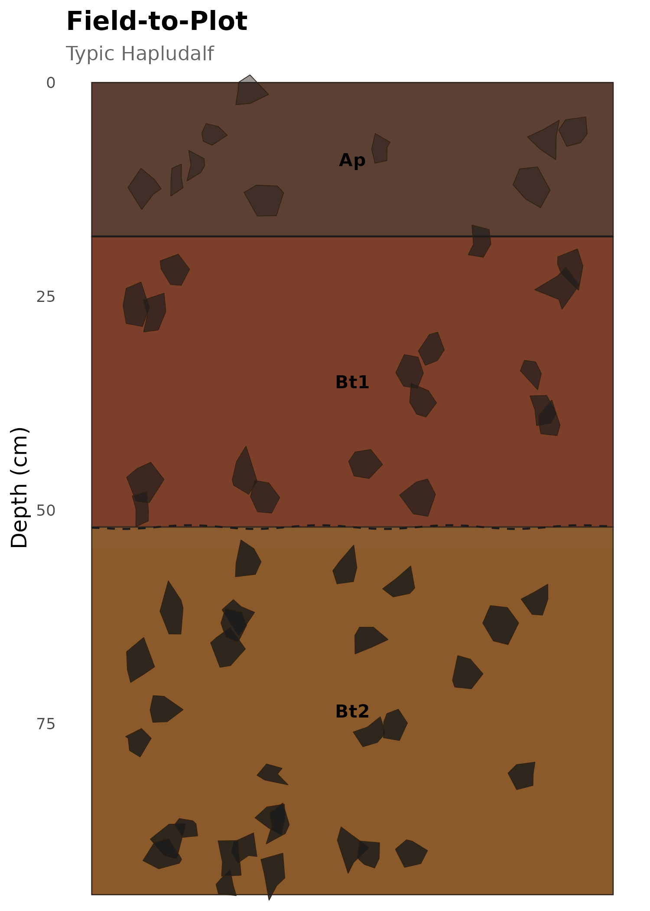
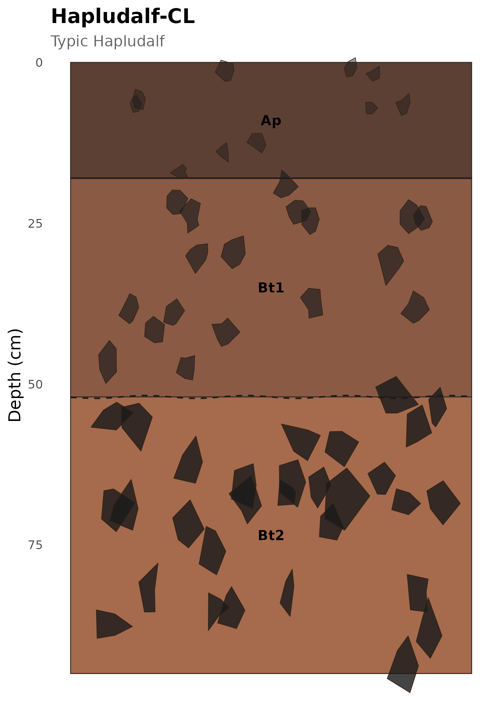
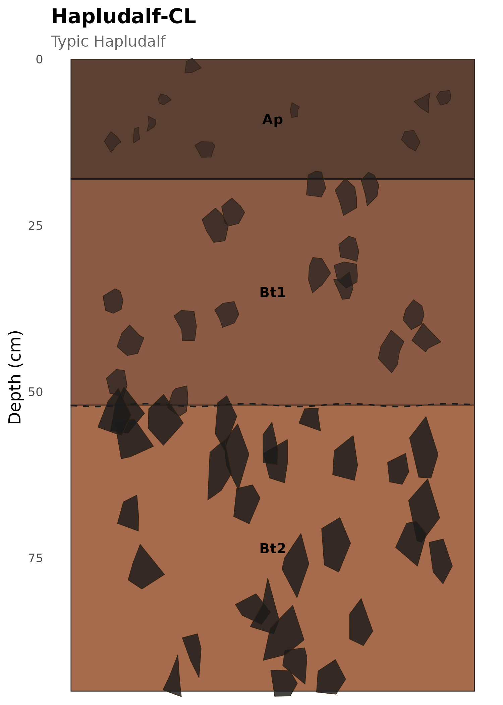
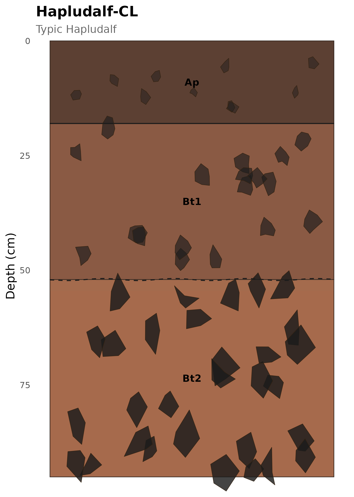

This gallery shows a variety of soil profile renderings using the soilgraph graphical engines. Each example includes the code and rendered plot.
1. Typical Hapludalf (Chile)
A 3-horizon profile with increasing fragment content and progressively less-distinct boundaries with depth:
profile_1 <- new_soil_profile(
site_id = "Hapludalf-CL",
classification = list(system = "Soil Taxonomy", taxon = "Typic Hapludalf"),
horizons = list(
new_soil_horizon(0, 18, label = "Ap", color = "#5C4033",
texture = "silt loam", boundary_grade = "clear", boundary_shape = "smooth",
coarse_type = "gravel", coarse_abundance = "few",
coarse_grade = "weak", coarse_size = "fine"),
new_soil_horizon(18, 52, label = "Bt1", color = "#8A5A44",
texture = "clay loam", boundary_grade = "gradual", boundary_shape = "wavy",
coarse_type = "cobble", coarse_abundance = "common",
coarse_grade = "moderate", coarse_size = "medium"),
new_soil_horizon(52, 95, label = "Bt2", color = "#A66A4C",
texture = "clay", boundary_grade = "diffuse", boundary_shape = "irregular",
coarse_type = "stone", coarse_abundance = "many",
coarse_grade = "strong", coarse_size = "coarse")
)
)
plot_soil_profile_advanced(profile_1, seed = 42)
#> Scale for fill is already present.
#> Adding another scale for fill, which will replace the existing scale.
#> Scale for alpha is already present.
#> Adding another scale for alpha, which will replace the existing scale.
Typic Hapludalf — silt loam over clay with increasing coarse fragments.
2. Deep sandy profile
A deep sandy soil with few fragments and smooth boundaries — a clean, minimal rendering:
profile_2 <- new_soil_profile(
site_id = "Sandy-Profile",
classification = list(system = "Soil Taxonomy", taxon = "Typic Quartzipsamment"),
horizons = list(
new_soil_horizon(0, 20, label = "A", color = "#C2A878",
texture = "sand", boundary_grade = "clear", boundary_shape = "smooth"),
new_soil_horizon(20, 55, label = "C1", color = "#D4BC8E",
texture = "sand", boundary_grade = "gradual", boundary_shape = "smooth"),
new_soil_horizon(55, 100, label = "C2", color = "#E0CCA0",
texture = "sand", boundary_grade = "diffuse", boundary_shape = "smooth"),
new_soil_horizon(100, 150, label = "C3", color = "#E8D8B0",
texture = "loamy sand", boundary_grade = "diffuse", boundary_shape = "smooth")
)
)
plot_soil_profile_advanced(
profile_2,
show_fragments = FALSE,
show_boundaries = TRUE,
show_transition_zones = TRUE,
seed = 42
)
Deep sandy profile with smooth boundaries.
3. Stony colluvial soil
Abundant boulders and channers in a thin dark soil over rock debris:
profile_3 <- new_soil_profile(
site_id = "Colluvial-01",
classification = list(system = "Field description", taxon = NULL),
horizons = list(
new_soil_horizon(0, 12, label = "A", color = "#3D2B1F",
texture = "loam", boundary_grade = "abrupt", boundary_shape = "irregular",
coarse_type = "channer", coarse_abundance = "common",
coarse_grade = "strong", coarse_size = "small"),
new_soil_horizon(12, 45, label = "C", color = "#6B5A4E",
texture = "sandy loam", boundary_grade = "clear", boundary_shape = "broken",
coarse_type = "boulder", coarse_abundance = "abundant",
coarse_grade = "very strong", coarse_size = "very coarse")
)
)
plot_soil_profile_advanced(profile_3, seed = 42)
#> Scale for fill is already present.
#> Adding another scale for fill, which will replace the existing scale.
Stony colluvial soil with abundant coarse fragments.
4. Fragment type comparison
All six fragment types at equal abundance and grade, side by side:
frag_types <- c("gravel", "cobble", "stone", "boulder", "channer", "flagstone")
profile_4 <- new_soil_profile(
site_id = "Fragment-Types",
horizons = lapply(seq_along(frag_types), function(i) {
new_soil_horizon(
top = (i - 1) * 15, bottom = i * 15,
label = frag_types[i],
color = "#8B7355",
coarse_type = frag_types[i],
coarse_abundance = "common",
coarse_grade = "moderate",
coarse_size = "medium",
boundary_shape = "smooth",
boundary_grade = "clear"
)
})
)
plot_soil_profile_advanced(profile_4, show_boundaries = FALSE, seed = 42)
#> Scale for fill is already present.
#> Adding another scale for fill, which will replace the existing scale.
All six coarse fragment types.
5. Boundary showcase
Four grade × shape combinations with transition zones:
profile_5 <- new_soil_profile(
site_id = "Boundary-Demo",
horizons = list(
new_soil_horizon(0, 15, label = "Abrupt\nSmooth", color = "#A0826D",
boundary_grade = "abrupt", boundary_shape = "smooth"),
new_soil_horizon(15, 30, label = "Clear\nWavy", color = "#9B7D66",
boundary_grade = "clear", boundary_shape = "wavy"),
new_soil_horizon(30, 50, label = "Gradual\nIrregular", color = "#96795F",
boundary_grade = "gradual", boundary_shape = "irregular"),
new_soil_horizon(50, 75, label = "Diffuse\nBroken", color = "#917558",
boundary_grade = "diffuse", boundary_shape = "broken")
)
)
plot_soil_profile_advanced(
profile_5,
show_fragments = FALSE,
show_boundaries = TRUE,
show_transition_zones = TRUE,
seed = 42
)
Boundary grade and shape demonstration.
6. Fragment abundance gradient
From very few to abundant fragments in identical horizons:
abundances <- c("very few", "few", "common", "many", "abundant")
profile_6 <- new_soil_profile(
site_id = "Abundance-Gradient",
horizons = lapply(seq_along(abundances), function(i) {
new_soil_horizon(
top = (i - 1) * 15, bottom = i * 15,
label = abundances[i],
color = "#8B7355",
coarse_type = "gravel",
coarse_abundance = abundances[i],
coarse_grade = "moderate",
coarse_size = "medium",
boundary_shape = "smooth",
boundary_grade = "clear"
)
})
)
plot_soil_profile_advanced(profile_6, show_boundaries = FALSE, seed = 42)
#> Scale for fill is already present.
#> Adding another scale for fill, which will replace the existing scale.
Fragment abundance increasing with depth.
7. From field notes to advanced plot
End-to-end workflow — field notes parsed and rendered with advanced engines:
field_notes <- data.frame(
Depth = c("0-18 cm", "18-52 cm", "52-95 cm"),
description = c(
"Ap dark brown silt loam moist clear smooth few subangular weak fragments",
"Bt1 reddish brown clay loam slightly moist gradual wavy common rounded moderate fragments",
"Bt2 brown clay dry diffuse irregular many subrounded strong fragments"
)
)
profile_7 <- soil_profile_from_table(
field_notes,
site_id = "Field-to-Plot",
classification = list(system = "Soil Taxonomy", taxon = "Typic Hapludalf")
)
plot_soil_profile_advanced(profile_7, seed = 42)
#> Scale for fill is already present.
#> Adding another scale for fill, which will replace the existing scale.
#> Scale for alpha is already present.
#> Adding another scale for alpha, which will replace the existing scale.
Field description parsed and rendered with all engines.
8. Seed variation
Same profile rendered with three different seeds — structures differ but properties are preserved:
plot_soil_profile_advanced(profile_1, seed = 1)
#> Scale for fill is already present.
#> Adding another scale for fill, which will replace the existing scale.
#> Scale for alpha is already present.
#> Adding another scale for alpha, which will replace the existing scale.
Seed = 1 — first random layout.
plot_soil_profile_advanced(profile_1, seed = 42)
#> Scale for fill is already present.
#> Adding another scale for fill, which will replace the existing scale.
#> Scale for alpha is already present.
#> Adding another scale for alpha, which will replace the existing scale.
Seed = 42 — different fragment placement.
plot_soil_profile_advanced(profile_1, seed = 99)
#> Scale for fill is already present.
#> Adding another scale for fill, which will replace the existing scale.
#> Scale for alpha is already present.
#> Adding another scale for alpha, which will replace the existing scale.
Seed = 99 — yet another layout.